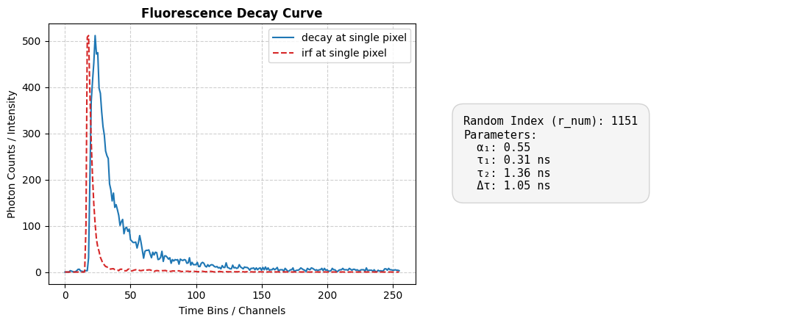
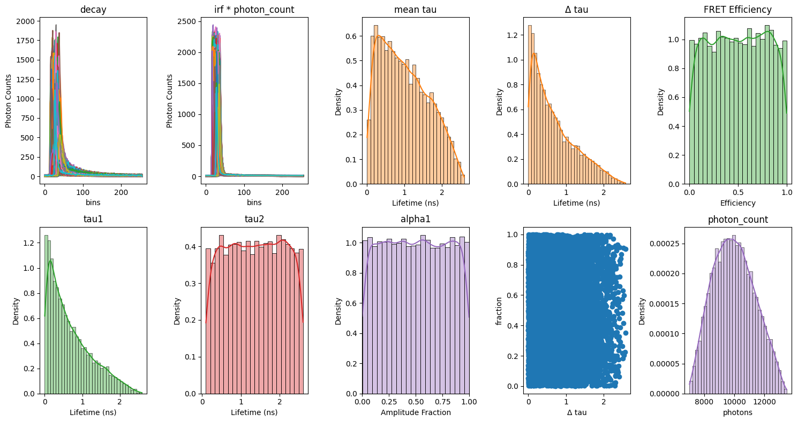

1. Single-Pixel Decay Simulation#
This example simulates many independent single-pixel fluorescence decays, mimicking a Fluorescence Lifetime Imaging Microscopy (FLIM) acquisition, and inspects the resulting parameter distributions.
This notebook walks through:
loading an instrument response function (IRF)
setting the imaging-instrument parameters (laser repetition rate, acquisition delay, etc.)
choosing the sample type (mono-exponential, bi-exponential, or a mixture of both decay models)
configuring detector / noise settings (jitter, dark counts, shot noise, quantization)
batching many independent single-pixel simulations via
make_simulator, andvisualizing the simulated decays alongside the resulting lifetime and amplitude parameter distributions
Author - Vikas
## importing the modules required for this work
import matplotlib.pyplot as plt
import numpy as np
import seaborn as sns # Used for seamless histogram + KDE overlay
from pyfli.analyticalWorkflow import AnalyticalHelpers
from pyfli.data_cc import Normalization
from pyfli.io import DataOperations
from pyfli.simulator import SimGenerator, make_simulator
IRF_PATH = "<select file/folder path>"
loader = DataOperations(irf_path=IRF_PATH)
irf_data = loader.load_irf()
print(f"IRF data shape is: {irf_data.shape}")
gate_delay = 12.5 / irf_data.shape[2]
num_gates = irf_data.shape[2]
freq = AnalyticalHelpers(
laser_period=12.5, gate_delay=gate_delay, num_gate=num_gates
).freq_computation()
print(f"the frequency use is: {freq[1]} MHz")
INFO:pyfli:Initiating IRF load from: <select file/folder path>
IRF data shape is: (512, 512, 256)
the frequency use is: 80.0 MHz
# select the type of decay model to simulate
MODEL_TYPE = "bi-exponential"
if MODEL_TYPE == "bi-exponential":
mono_fraction = 0.0
elif MODEL_TYPE == "mono-exponential":
mono_fraction = 1.0
else:
mono_fraction = 0.4 # fraction of mono-exponential model in sampled data
# Tune the simulator parameters
config = {
# Modular Noise
"jitter": True, # offset artifact (due to jitter)
"dcr_on": True, # Dark Count Rate (thermal background)
"poisson": True, # Shot noise — Large detector only
"qe_on": True, # Quantum efficiency scaling
"read_noise_on": True, # Gaussian read noise — Large detector only
# Sensor
"sensor_type": "discrete", # "continuous" | "discrete"
"dcr": 0.08, # Mean dark counts per bin
"laser_feq": freq[1], # Laser repetition rate (MHz) → period = 12.5 ns
"round_on": True, # Round photon counts to integers — Macro_sim only
"clip_on": True, # Clip at bit-depth ceiling — Macro_sim: max_adc_val; TCSPC: max_bin_count
# Fluorescence Physics (FLI / FRET)
"tau2": (1, 1), # τ₂ ~ TruncNormal(mu=1 ns, sigma=0.5 ns)
"tau2_dist": "beta", # if dist "beta" or "normal" (default)
"tau2_beta_range": (2.5, 0.1), # (scale, range)
"efficiency": (1, 1), # FRET efficiency E ~ Beta(2, 5) → [0.1, 1.0]
"A1_fraction": (1, 1), # Amplitude fraction A₁ ~ Beta(2, 5) → [0.05, 0.95]
"photo_count": (1, 1), # Peak intensity ~ Beta(2, 5) × max_adc - large detectors
"mono_fraction": mono_fraction, # Fraction of pixels forced mono-exponential (0.0 = all bi-exp)
"n_cycles": (1_000_000, 1_500_000), # Accumulation cycles — for photon counter
}
NUM_SAMPLES = 10000
sim = SimGenerator(irf_data, config, a_range=(-10, 10), b_range=(0, 10))
sim_data = make_simulator(sim.simulate_once, NUM_SAMPLES)
r_num = np.random.randint(NUM_SAMPLES)
tau_dif = sim_data["tau2"] - sim_data["tau1"]
fig, axs = plt.subplots(1, 2, figsize=(11, 4.5))
axs[0].plot(
sim_data["decay"][r_num],
color="tab:blue",
linewidth=1.5,
label="decay at single pixel",
)
axs[0].plot(
Normalization(sim_data["irf"][r_num]).norm_scale(sim_data["decay"][r_num]),
color="tab:red",
linewidth=1.5,
linestyle="--",
label="irf at single pixel",
)
axs[0].set_title("Fluorescence Decay Curve", fontsize=12, fontweight="bold")
axs[0].set_xlabel("Time Bins / Channels", fontsize=10)
axs[0].set_ylabel("Photon Counts / Intensity", fontsize=10)
axs[0].grid(True, linestyle="--", alpha=0.6)
axs[0].legend(loc="upper right")
axs[1].axis("off")
text_content = (
f"Random Index (r_num): {r_num}\n"
f"Parameters:\n"
f" α₁: {sim_data['alpha1'][r_num]:.2f}\n"
f" τ₁: {sim_data['tau1'][r_num]:.2f} ns\n"
f" τ₂: {sim_data['tau2'][r_num]:.2f} ns\n"
f" Δτ: {tau_dif[r_num]:.2f} ns"
)
axs[1].text(
0.1,
0.5,
text_content,
fontsize=11,
family="monospace",
va="center",
ha="left",
bbox=dict(boxstyle="round,pad=1", facecolor="whitesmoke", edgecolor="lightgray"),
)
plt.tight_layout()

fig, axes = plt.subplots(2, 5, figsize=(15, 8))
axes[0, 0].plot((sim_data["decay"]).T)
axes[0, 0].set_title("decay")
axes[0, 0].set_xlabel("bins")
axes[0, 0].set_ylabel("Photon Counts")
axes[0, 1].plot((sim_data["irf"]).T * (sim_data["photon_count"]).T)
axes[0, 1].set_title("irf * photon_count")
axes[0, 1].set_xlabel("bins")
axes[0, 1].set_ylabel("Photon Counts")
sns.histplot(
data=sim_data["tau"].flatten(),
ax=axes[0, 2],
kde=True,
stat="density",
color="tab:orange",
alpha=0.4,
)
axes[0, 2].set_title("mean tau")
axes[0, 2].set_xlabel("Lifetime (ns)")
sns.histplot(
data=tau_dif.flatten(),
ax=axes[0, 3],
kde=True,
stat="density",
color="tab:orange",
alpha=0.4,
)
axes[0, 3].set_title("Δ tau")
axes[0, 3].set_xlabel("Lifetime (ns)")
sns.histplot(
data=sim_data["Efficiency"].flatten(),
ax=axes[0, 4],
kde=True,
stat="density",
color="tab:green",
alpha=0.4,
)
axes[0, 4].set_title("FRET Efficiency")
axes[0, 4].set_xlabel("Efficiency")
sns.histplot(
data=sim_data["tau1"].flatten(),
ax=axes[1, 0],
kde=True,
stat="density",
color="tab:green",
alpha=0.4,
)
axes[1, 0].set_title("tau1")
axes[1, 0].set_xlabel("Lifetime (ns)")
sns.histplot(
data=sim_data["tau2"].flatten(),
ax=axes[1, 1],
kde=True,
stat="density",
color="tab:red",
alpha=0.4,
)
axes[1, 1].set_title("tau2")
axes[1, 1].set_xlabel("Lifetime (ns)")
sns.histplot(
data=sim_data["alpha1"].flatten(),
ax=axes[1, 2],
kde=True,
stat="density",
color="tab:purple",
alpha=0.4,
)
axes[1, 2].set_title("alpha1")
axes[1, 2].set_xlabel("Amplitude Fraction")
axes[1, 2].set_xlim(0.0, 1.0)
sns.histplot(
data=sim_data["photon_count"].flatten(),
ax=axes[1, 4],
kde=True,
stat="density",
color="tab:purple",
alpha=0.4,
)
axes[1, 4].set_title("photon_count")
axes[1, 4].set_xlabel("photons")
# axes[1, 4].set_xlim(0.0, 1.0)
axes[1, 3].scatter(tau_dif, sim_data["alpha1"])
axes[1, 3].set_xlabel("Δ tau")
axes[1, 3].set_ylabel("fraction")
plt.tight_layout()
plt.show()
